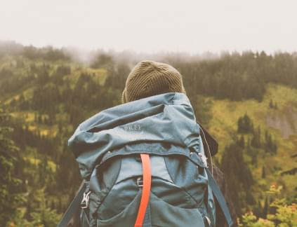
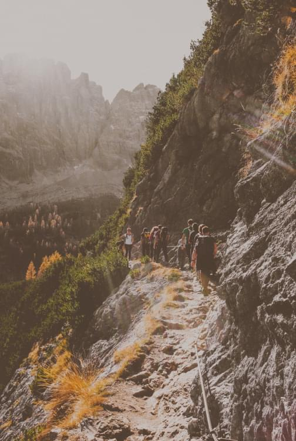
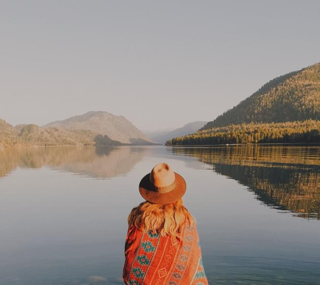
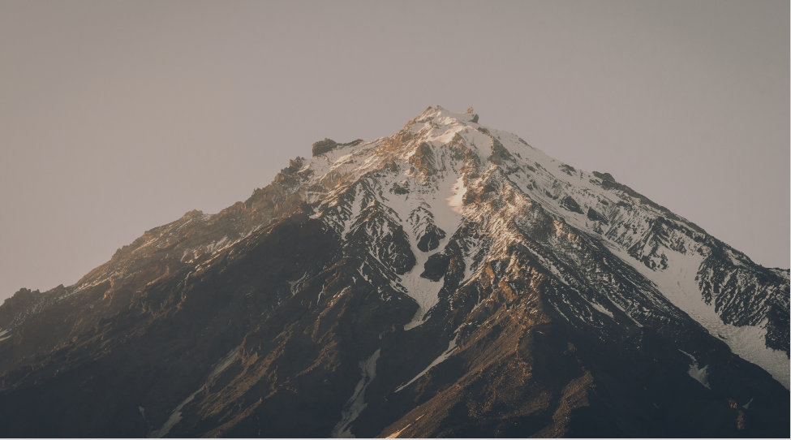
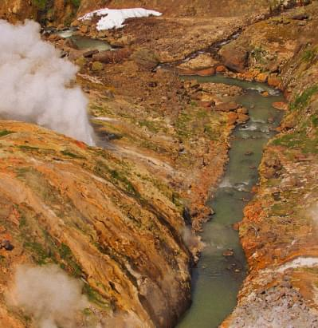
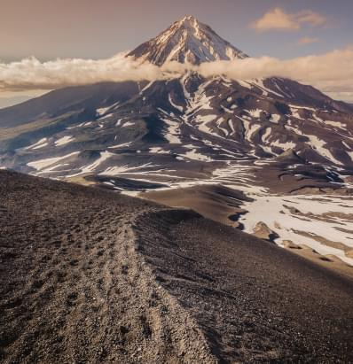
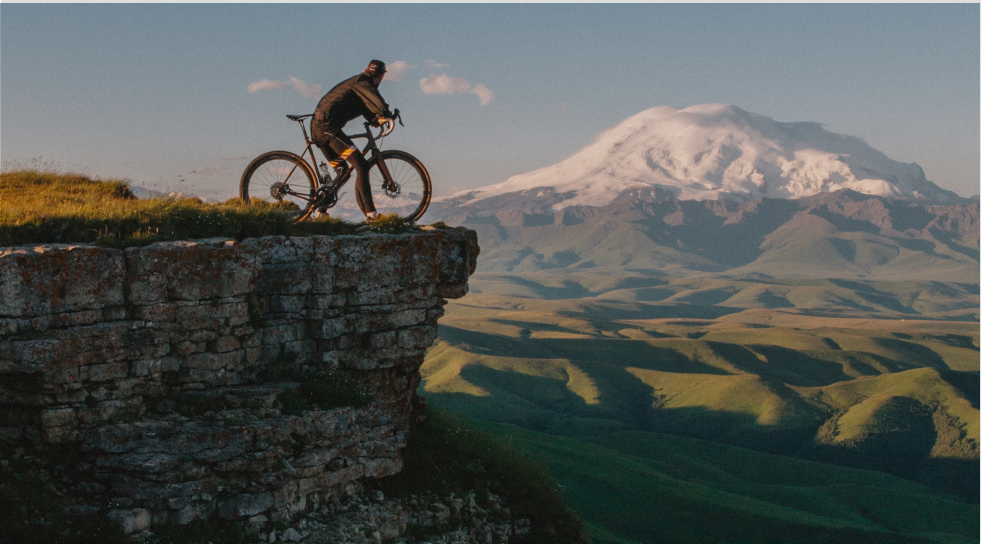
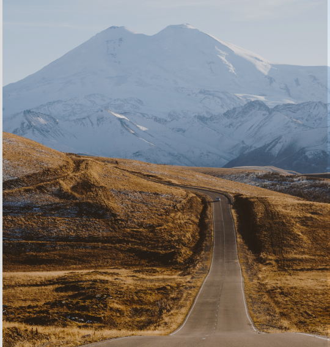
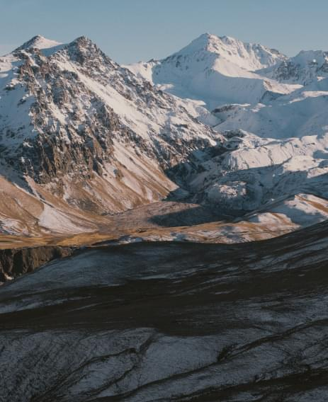
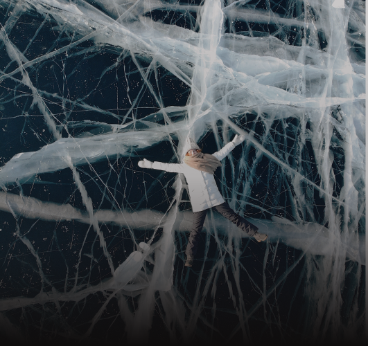

“Умом Россию не понять,
Аршином общим не измерить:
У ней особенная стать
В Россию можно только верить.”

10 000 км
Протяженность России с запада на восток
4 000 км
Протяженность России с севера на юг

Познакомься
с Россией

Территория России огромна, и поэтому климатические условия в различных её регионах сильно отличаются, вместе
с природным ландшафтом.
Исходя из этих факторов, температура зимой в разных регионах, в одно и тоже время, может сильно отличаться,
например от +10+15°C в Сочи, до -30-50°C в Якутии. Или, летом от +5+15°C на севере, до +50°C в Астраханских
степях.
Вулканы Камчатки

300
Крупных вулканов
52
Действующих вулканов
КАМЧАТКА
Долина гейзеров
Основа драматичных панорам заповедника - пышущие гейзеры, бурлящие и взрывающиеся сокрушительными
потоками воды
и пара.

КАМЧАТКА
Ключевская Сопка
Самым высокий активный вулкан
на Евразийском материке. Возраст вулкана приблизительно 7000 лет.

Могущество Кавказа

5 642 м
Самая высокая вершина России

КАВКАЗ
Ущелье Аманауз
Ущелье Аманауз начинается сразу за Домбаем. Его называют «музеем
под открытым небом». Ведь если пройти вдоль него, то можно увидеть все геологические эры развития
планеты.
КАВКАЗ
Эльбрус
Самая высокая горная вершина России, а также высочайшая вершина Европы, входящая в список высочайших
вершин частей света «Семь вершин».

Величие Байкала

Самое древнее озеро мира, возраст которого насчитывает около 30 миллионов лет. Озеро Байкал называют
«лабораторией биоразнообразия». В нем обитает почти 3 тыс. видов животных
и растений, причем многие из них нигде больше не встречаются.